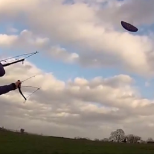

The Daily Raft
About us
Stories
About us
Stories
1 / 2
The greatest, from our archives
2 / 2
Who we are
❮
❯
Featured articles from the past
ARCHIVE: Tramping Across America: A Guide
A guide on how to live a carefree lifestyle
ARCHIVE: In Memoriam: Chris McCandless
1968-1992
The latest news

Two men from London fly a kite in a public park for the first time
The ending will shock you!